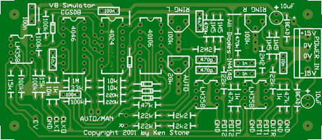
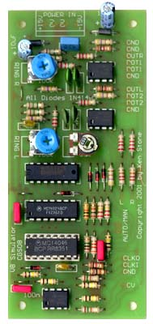

|
for music synthesizers.
This module is a an improved V8 engine simulator and has been an ongoing project of mine for the last twelve or so years. It consists of several circuit blocks, including a VCO, a circuit for generating the timing pulses for left and right exhausts, a pair of resonant devices and a pair of distortion units. This design is a much improved version of the simpler module described elsewhere. How to use this module: Use either an external control voltage, or the inbuilt speed pot to control the "revs". The distortion control adjusts the harshness of the exhaust sound. With the Auto/Manual switch set to Manual, the revs can be swept from minimum to maximum. Set the switch to Auto, and in-built logic will simulate a three ratio transmission, gearing up twice during an upward sweep, and gearing down twice during a downward sweep. Plugging into either output jack will give a mono output, as long as the other jack is empty. Plugging into both gives separate left and right outputs. Some of the sounds generated by this unit are extreme. The output levels are designed to interface with synthesizers with signal ranges of +/- 10 volts. Plugging it directly into an amplifier is NOT RECOMMENDED. When first trying it out, do so with your volume set LOW to avoid damaging ears or speakers! It is possible to run the circuit from an external clock source, such as a VCO. That way you can play the module from a keyboard, though the results may not be what you expect, as the clock controls the triggering of the module's two fixed pitch sound sources. When running from a really slow clock source, such as an external LFO, it can be used as a simple rhythm unit! Now go rattle some windows! A little on how it works:
The schematic of the V8 Simulator. The circuit consists of several distinct blocks. The first is the internal VCO and its associated parts. From the left, there is a voltage follower, the "automatic transmission" and the VCO itself, which is part of a 4046 phase locked loop. As the control voltage at the input is swept upwards, the voltage at the output of the voltage follower will pass the threshold of first the upper schmitt inverter, the the second one. As is thresholds are reached, the output of the schmitt inverters will fall, and assuming the "auto change" switch is closed, will form a voltage divider with the 100k resistor between the output of the voltage follower and the input of the VCO. This will reduce the voltage present at the input of the VCO, thus reducing its pitch. The second circuit block is the timing generator. At the left, there is a comparator based around one half of an LM358. This is there to convert any external clock signal into something suitable for the remainder of the circuitry. With the values given, the sensitivity is set at around 1.5V, allowing triggering from signals with a +/- 10 volt swing, or with a 0V to +10 volt swing, both of which are common in modular synths. The output waveforms of some modules will never fall below the 1.4V level, preventing triggering. This can be solved by increasing the value of the 10k resistor between pin 6 of IC1 and ground to 22k. The output of this comparator is fed into the clock input of the binary counter, a 4024 divider chip. Outputs Q4 (divide by 16), Q5 and Q7 (divide by 32 and divide by 128) have been chosen. The absolute values are not important, but the relationship between them is. (Q1, Q2 and Q4 could have been used if the VCO was running at a lower frequency). Q5 and Q7 are fed into an Exclusive OR gate (phase comparator 1 of the 4046). The resultant pulse-train is LOW, LOW, HIGH, LOW, HIGH, HIGH, LOW, HIGH. This just right for simulating the V8's exhaust cycle of left, left, right, left, right, right, left, right. This signal is gate with Q4 to generate the timing pulses for the right exhaust pipe. Inverting the output of the Exclusive OR gate and gating it with Q4 gives us the correct timing for the left exhaust pipe. To generate the resonances of the the exhaust pipes, I have used a pair of ringing oscillators as frequently used in old rhythm units. They are triggered by upsetting the zero volt reference at the inverting input of the op-amps. This actually causes two trigger events per pulse, one at the leading edge of the pulse, and another at the trailing edge. The ringing oscillators have been set at different frequencies by using different value capacitors. The outputs of the ringing oscillators are fed to a pair of inverting buffers wired so that their gain will force their outputs to clip. The level of gain is adjustable with a dual gang pot, and gain can be reduced until clipping no longer occurs if desired. This gives control over the harshness of the exhaust note. The left and right outputs are fed to a pair of jacks that have their normalized connections wired so that insertion into a single jack will give a mixed mono output. It is a good idea to insert a 1k resistor between the +15V supply and the normalized connection on the CV jack. This is because +15 will momentarily be fed out of this jack when you plug something into it, due to the mechanical nature of the contacts. Notes:
Construction
 The overlay of the V8 Simulator.
As the PCBs are no longer being produced, I am presenting the artwork here for those that wish to home etch. The art is done at 300dpi, even though .gif format saves them with the incorrect value of 72 dpi. Right-click to save. Boards may be produced for yourself, or for friends, but NOT made available for public sale. If you produce a run of boards as a group project, extra boards may be sold via synth forums. Note that I will not provide technical support for boards that have not been supplied by me.I suggest you ask on one of the CGS support forums if you have trouble. Before you start assembly, check the board for etching faults. Look for any shorts between tracks, or open circuits due to over etching. Take this opportunity to sand the edges of the board if needed, removing any splinters or rough edges. When you are happy with the printed circuit board, construction can proceed as normal, starting with the diodes and resistors first, followed by the IC sockets if used, then moving onto the taller components. Take particular care with the orientation of the polarized components, the diodes, electrolytics and the transistors and ICs. When inserting the ICs in their sockets, take care not to accidentally bend any of the pins under the chip. Also, make sure the notch on the chip is aligned with the notch marked on the PCB overlay. Please note that the CMOS chips are static sensitive devices, so make sure you handle them correctly. The first batch of ten boards had a minor error on them. Follow the diagram below to correct the problem. Note that the currently available PCB does NOT have this error, and needs no modification.
I also suggest adding a protection diode at the input of the VCO. Connect the anode of a 1N4148 to pin 9 of the 4046, and the cathode to ground. It is not strictly necessary, as the internal input protection diode of the 4046 coupled with the high impedance of the 100k feeding it should provide adequate protection from negative CVs. This does not apply to the current Rev 1.2 PCB. which has this modification on the PCB already.
Wiring up the PCB. Setting up the unit. Plug a patch cord into the External Clock input. Don't connect the other end of the patch cord to anything. Adjust the RING L and RING R trim-pots until the oscillators just stop oscillating. Remove the patch cord. You should now be able to sweep the V8 effect across its range using the Speed pot. Switch the Auto/Manual switch to Auto and sweep the pot up and down again. Adjust the Auto Change trim-pot until the second change occurs in what sounds to be the right place.
Parts list This is a guide only. Parts needed will vary with individual constructor's needs. If anyone is interested in buying one of these boards, the price is US$10. Check the PCBs for Sale page to see if I have any in stock. Please note that there is a minor error on the first run of PCBs. Can't find the parts? See the parts FAQ to see if I've already answered the question.  Individual construction of modules based on the original designs of Ken Stone is encouraged. Commercial production of these designs is prohibited without written permission from the designer, Ken Stone. Note that no guarantees are given for any of these designs.
Article, art & design copyright 2001 by Ken Stone
| ||||||||||||||||||||||||||||||||||||||||||||||||||||||||||||||||||||||||||||||||||
{kind=link}
{kind=link}